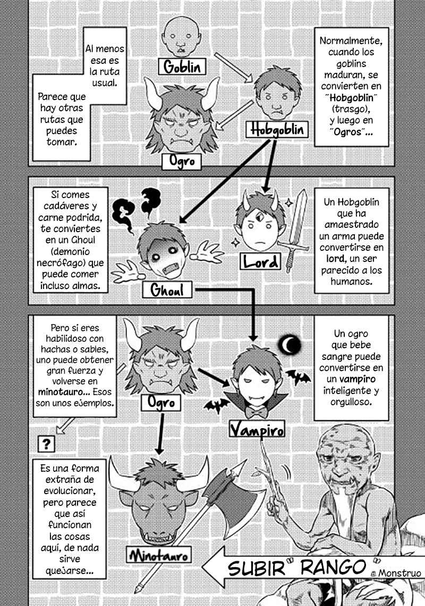

Resumen
Tomokui Kanata es un esper que tras ser asesinado por una acosadora, reencarna como un goblin ( Duende ), con el nombre de goburou, conservando los recuerdos de su vida pasada y un peculiar habilidad que le permite obtener las habilidades de las criaturas que devore.
Autor: Kanekiru Kogitsune (金斬児狐)
Ilustrador: Kobayakawa Haruyoshi (小早川ハルヨシ)
Comentarios
Re:Monster se encuentra en el top 1 de este ranking personal, pues cuando inicie mi travesia a los mangas de este genero, era reacio a leerlo, ya que su protagonista y su historia general, me parecian aburridos, despues de todo que tanta diversion nos puede traer un goblin, pero debo admitir que nunca estube mas equivocado, primero que nada tenemos a nuestro protagonista:
Goburou (Tomokui Kanata)

Es un personaje el cual tiene mucho mas que ofrecer de lo que aparenta a simple vista, ignorando la idea de un simple y debil goblin, y apovechando los poderes de su vida pasada y asi logrando evolucionar de forma mas eficiente, ya que si, ese es el principal factor que hace que me encariñara tanto con este manga, las evoluciones.
Los monstruos en base a un sistema de niveles, pueden ir evolucionando, en diversos monstruos mas poderosos, que varian segun las circunstancias o atributos de cada uno, llegando a niveles de poder cada vez mas impresionantes.

Estas transformaciones, los conocimientos del protagonismo y su gran liderasgo, logran que nuestros debiles goblins evolucionen a seres insospechadamente poderosos, asi creando uno de los mejores ejercitos de mercenarios este nuevo mundo.
Esta entre muchas otras razones, hace que este manga sea uno de los mejores de su genero, y mi favorito liderando este top, el manga aun no tiene anime, pero si tiene un juego en japon el cual puedes descargar para disfrutar de esta buena historia.
Si desean leer este manga lo puedes encontrar en algunos de los siguientes link: